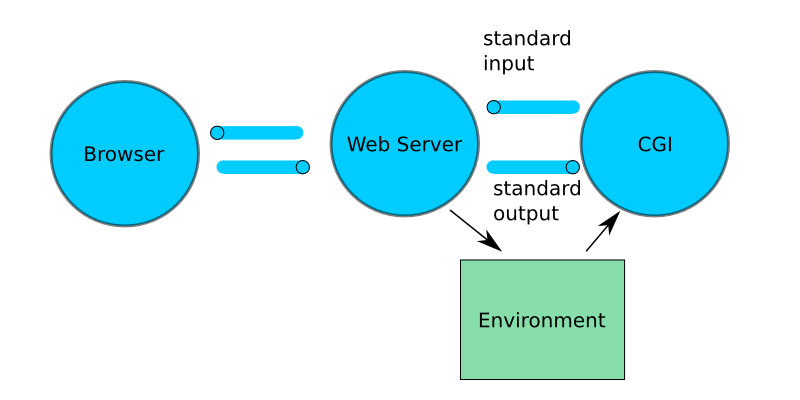

CGI es una tecnología que permite que un servidor web ejecute programas (scripts) externos, generando contenido dinámico para el cliente.
A diferencia de CLI (Command Line Interface), donde los comandos se ejecutan manualmente desde una terminal, CGI permite la ejecución de scripts en el servidor a través de peticiones HTTP, como GET o POST.
El servidor web recibe la solicitud del cliente, ejecuta el script y devuelve el resultado al navegador.
